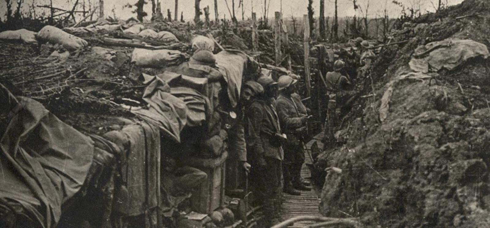
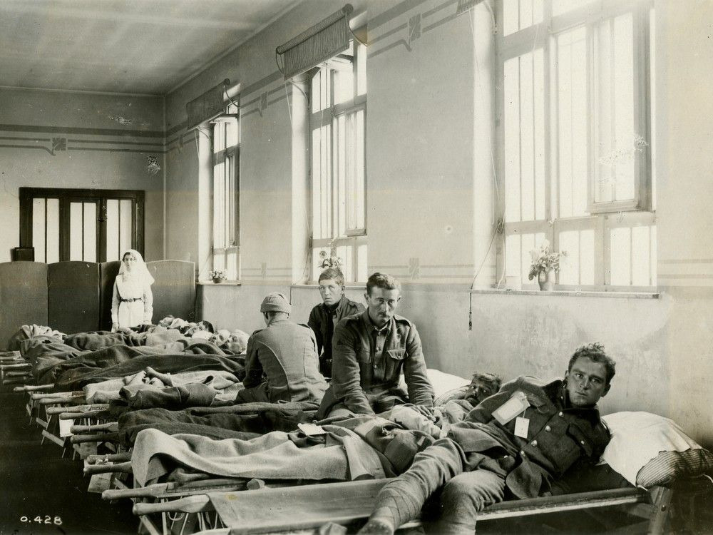
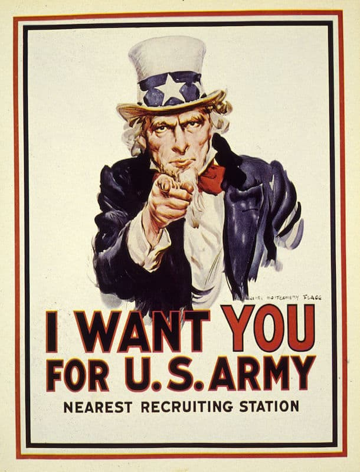
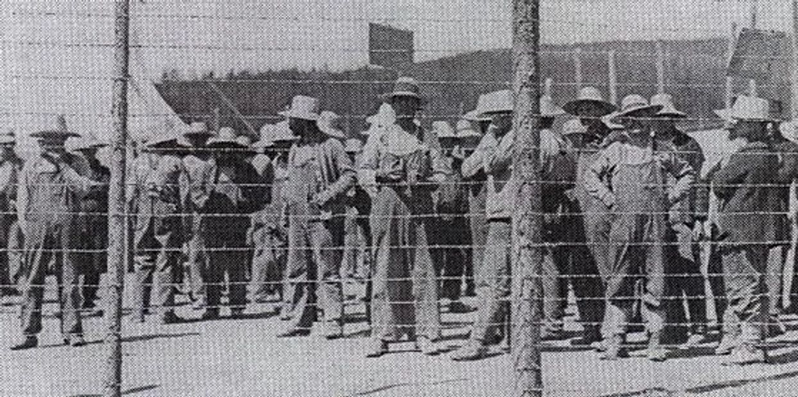

Scroll down to explore how the First World War affected Canada. This interactive page explains the background of the war and three major impacts on Canadian society.

World War One began in 1914 after the assassination of Archduke Franz Ferdinand of Austria‑Hungary, leading Europe’s nations into a large war because of long‑standing alliances and tensions. Canada entered the war automatically when Britain declared war on Germany because Canada was still legally part of the British Empire at the time. Over 620,000 Canadians served in the war, including soldiers and nurses, even though Canada’s population was much smaller than today’s. Canadian forces fought mainly on the Western Front in Europe, with battles that lasted weeks and caused many deaths and injuries because of new weapons like artillery and machine guns. The war lasted until 1918 and changed Canada both at home and overseas. (Canadian War Museum; Veterans Affairs Canada)
One of the deepest impacts of World War One on Canada was the high number of deaths and injuries. About 60,000 Canadians were killed and over 170,000 were wounded during the war. Battles such as Vimy Ridge became famous because they showed how skilled and determined Canadian troops were, but they also showed how dangerous the fighting was. At Vimy Ridge in 1917, all four Canadian divisions fought together successfully for the first time, which helped reshape how Canadians saw themselves and how the world saw Canada. This victory became part of Canada’s national pride and identity, even though it came with heavy losses. (Britannica; militarhistory.ca)


Another important impact of World War One in Canada was the Conscription Crisis of 1917. At the beginning of the war, many Canadians volunteered to join the army. However, as the war continued and the number of casualties increased, fewer people were willing to enlist. Because of this problem, the Canadian government introduced the Military Service Act, which forced many men to join the military. This decision caused strong disagreement across the country. Many English Canadians supported conscription because they believed it was necessary for Canada to help win the war. However, many French Canadians strongly opposed the policy. They felt that the war mainly supported Britain and did not directly protect Canada. This disagreement created serious political and social divisions within the country and led to protests and riots in some places (Hoogeveen et al. 45).
World War One also caused discrimination against some immigrant groups in Canada. People who had originally come from countries that were enemies of Britain were often viewed with suspicion. Many Ukrainian Canadians were labeled as “enemy aliens” even though they had lived in Canada peacefully. The government placed thousands of these individuals in internment camps where they were forced to do hard labour and lost many of their rights. Families were separated and many people suffered unfair treatment during this time. Today, historians recognize that these actions were unjust and harmful. This part of Canadian history shows how fear during wartime can lead to discrimination against innocent people. It also reminds Canadians about the importance of protecting the rights of all citizens, even during difficult times (Hoogeveen et al. 45).

Overall, World War One brought many serious and lasting impacts to Canada. The country lost tens of thousands of soldiers and saw even more wounded, and these losses affected many families and communities. The introduction of conscription caused deep social and political divisions, and wartime laws led to discrimination and unfair treatment of immigrants. Although Canada grew in international respect and began moving toward greater independence after the war, the human cost and domestic conflicts remain important parts of Canadian history, reminding people of both sacrifice and the dangers of fear‑driven policy. (Canadian War Museum; Veterans Affairs Canada)
Hoogeveen, Margaret, et al. Creating Canada: A History – 1914 to the Present. 2nd ed., McGraw-Hill Ryerson, 2014.
“Canada and the First World War.” Canadian War Museum, Canadian War Museum, https://www.warmuseum.ca/remembrance-day-resources/canada-and-the-first-world-war. Accessed 13 Mar. 2026.
“First World War: Vimy Ridge.” Britannica, Encyclopædia Britannica, https://www.britannica.com/event/Battle-of-Vimy-Ridge. Accessed 13 Mar. 2026.
Veterans Affairs Canada. “The First World War: Overview.” Veterans Affairs Canada, Government of Canada, https://www.veterans.gc.ca/eng/remembrance/history/first-world-war. Accessed 13 Mar. 2026.